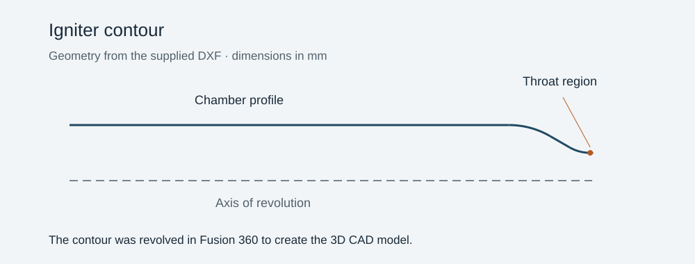
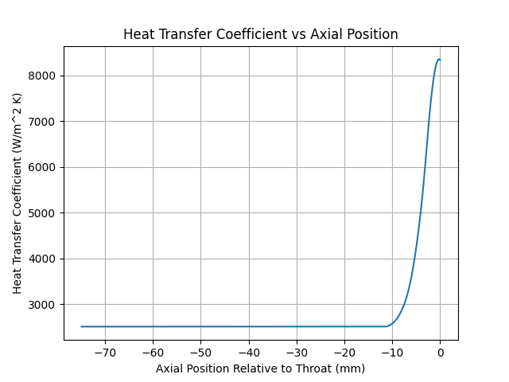
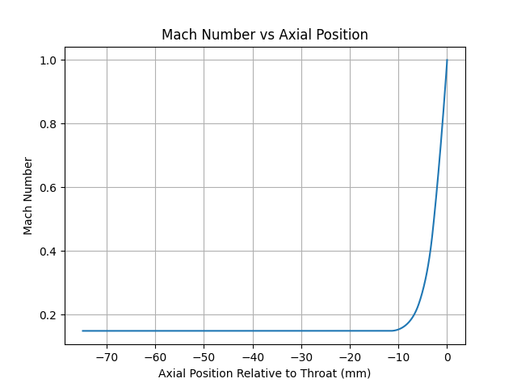

02 / PROPULSION / HEAT TRANSFER
Igniter thermal analysis
From nozzle contour to local Mach number, heat transfer, and wall temperature.
The objective
Estimate how heating varies along an ethanol–oxygen torch igniter, with particular attention to the nozzle throat and the thermal response of an Inconel 718 wall.
The approach
The Python workflow converts a nozzle contour into local area ratios, obtains combustion properties with CEA, and solves the area–Mach relation on the appropriate flow branch. Recovery temperature and the Bartz correlation feed a simplified transient surface-temperature estimate.
The outcome
The saved plots show Mach number approaching one near the throat and a sharp rise in heat-transfer coefficient and predicted wall temperature in the same region. Together, these outputs locate the strongest thermal loading in the modeled contour.
Engineering decisions & tradeoffs
The design balances ignition capability, wall heating, packaging, and analysis complexity. These choices summarize the project’s engineering notes.
Ethanol / LOX instead of hydrogen / GOX
The propellant choice moved away from hydrogen and gaseous oxygen to ethanol and liquid oxygen. The rationale was to share the rocket’s LOX supply, simplify integration, and reduce flame temperature. Hydrogen’s ignition flexibility was attractive, but separate storage and leak-sensitive interfaces added complexity.
A fuel-rich mixture: O/F = 0.8
The fuel-rich operating point was chosen to reduce combustion temperature and limit oxidizing conditions at the wall. The tradeoff is reduced propulsive efficiency and combustible exhaust that can continue burning outside the igniter during standalone testing. Ignition and thermal survivability were prioritized over specific impulse.
Inconel 718 for the wall
The material selection emphasized elevated-temperature strength, oxidation resistance, and tolerance of rapid thermal cycling. The tradeoffs were machining difficulty, cost, availability, and low thermal conductivity, which limits how quickly heat can spread away from the hot region.
500 psia chamber pressure / 250 psia exit-pressure input
The pressure choice aimed to maintain discharge into the main chamber and support a compact igniter. Higher pressure also increases the demands on the feed system, plumbing, and thermal design. The pressure pair is the analysis operating case; performance against main-engine back pressure still depends on the full system conditions.
A one-second burn
The short firing duration was intended to provide enough time for ignition while limiting accumulated heat and propellant use, with the goal of avoiding active cooling. This makes firing duration and heat soak between starts important design constraints; the calculation does not establish a tested failure time or restart interval.
Contour geometry and residence time
A 4:1 chamber-to-throat area ratio was selected to keep chamber velocity low while providing room for mixing and combustion. A 6 mm upstream throat radius of curvature and nominal 30° converging / 15° diverging half-angles were chosen as conventional starting geometry. The intent was a smooth transition into the throat without unnecessary size. Chamber length was a tradeoff between vaporization and combustion residence time, heated surface area, and frictional losses.
Propellant inlet temperatures
The analysis uses 290 K ethanol and 85 K LOX. The notes describe near-room-temperature ethanol as a way to simplify fuel plumbing, and cold liquid oxygen as consistent with the intended cryogenic supply.
First-order thermal analysis and a bracketed solver
The area–Mach relation, recovery-temperature model, and Bartz correlation provide a practical first estimate of axial heating. The simplified wall response leaves out axial heat conduction and uses constant material properties. Brent’s bracketed root solver keeps each Mach solution on its intended subsonic or supersonic branch. These choices reduce model complexity, but do not guarantee conservative temperatures.
Proposed next steps
The notes propose adding a pressure distribution to check the expansion and inform wall sizing, and estimating total and individual propellant mass flows. Repeated local CEA calculations were considered as a higher-complexity option. These are proposed extensions, not results demonstrated by the current script.
Scope & interpretation
These are analytical model outputs, not hot-fire measurements. The thermal estimate uses constant material properties and a simplified conduction response; the saved plots have not been independently regenerated.
GEOMETRY / FUSION 360
From DXF contour to revolved CAD
The contour was revolved in Fusion 360 to make the igniter CAD model. The preview below shows the two-dimensional profile geometry and centerline.



